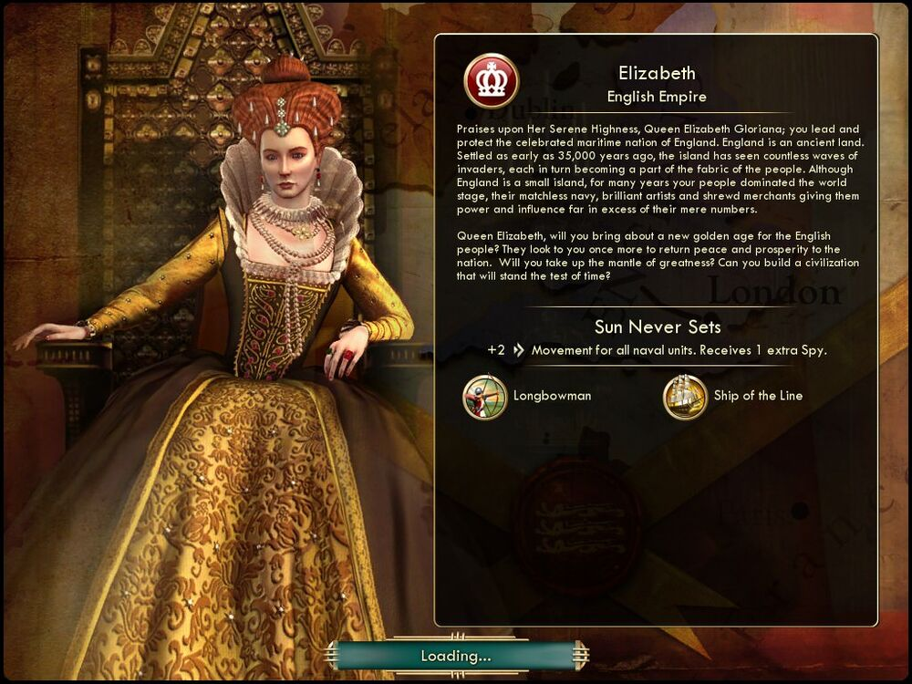

엘리자베스 Elizabeth영국 England |
|  |
| 고귀하신 엘리자베스 여왕 폐하. 그대는 축복받은 해양 국가인 잉글랜드의 수호자이며 지도자이십니다. 잉글랜드는 태고의 섬입니다. 3만 5천 년 전에 인류가 이 땅에 정착하였고, 셀 수 없는 외침을 겪으면서 백성들은 힘을 합쳐왔습니다. 비록 작은 섬이지만 그대의 백성은 여러 해 동안 세계 무대를 장악하였고, 비할 데 없이 강한 해군과 뛰어난 예술가들, 그리고 기민한 상인들은 단순히 숫자로 판단할 수는 없을 만큼 큰 영향력을 행사했습니다.
엘리자베스 여왕 폐하, 잉글랜드의 백성들에게 새로운 황금시대를 열어주시겠습니까? 백성들은 다시 한 번 그대가 국가에 평화와 번영을 가져오시길 바라고 있습니다. 과거의 위대한 업적을 잇고 시대의 한계를 뛰어넘는 문명을 건설해 주시겠습니까? |
| 속성 | |
|---|---|
| 특성 |
해가 지지 않는 나라 (Sun Never Sets) 모든 해상 유닛의 행동력이 2 증가합니다. 스파이를 사용할 수 있게 되었을 때 추가 스파이를 받습니다. |
| 고유유닛1 |
장궁병
(Longbowman) 석궁병을 대체하는 고유 유닛입니다. 사거리 승급(사거리가 1 증가)을 가집니다. |
| 고유유닛2 |
전열함
(Ship of the Line) 프리깃을 대체하는 고유 유닛입니다. 전투력이 25에서 30으로 증가하고, 원거리 전투력이 28에서 35로 증가합니다. 생산 비용이 185에서 170으로 감소합니다. 시야가 1 증가합니다. |